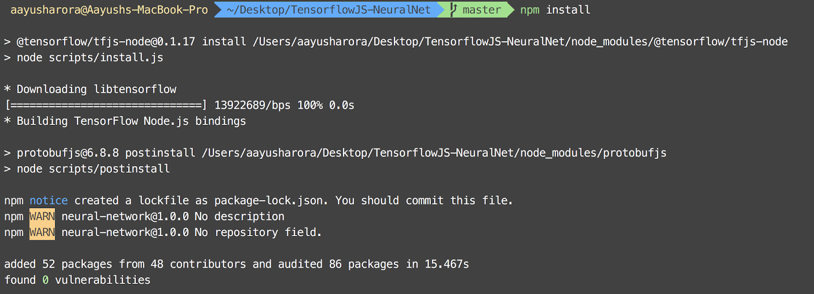
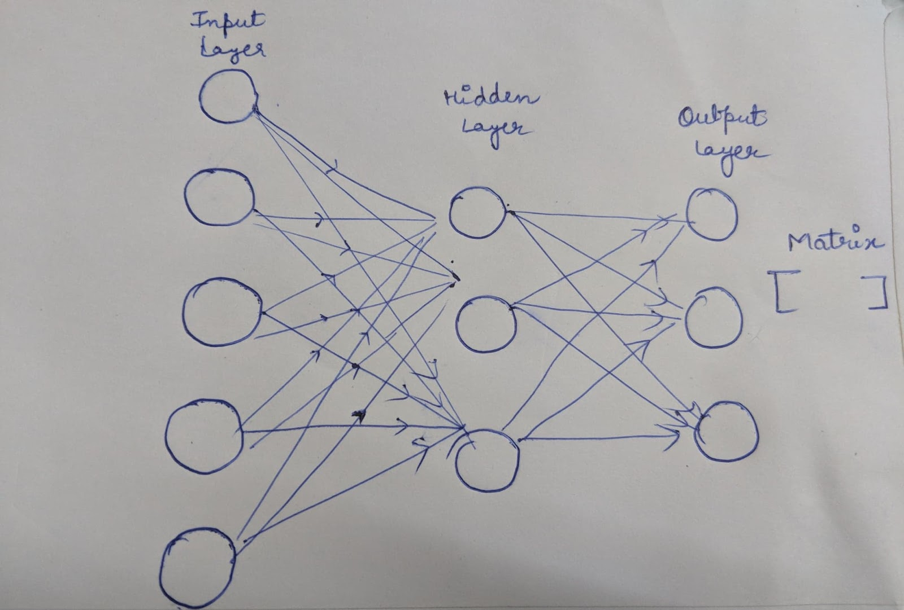

This codelab will walk you through creating your own neural network and train it using Iris dataset, and then will help you to categorize Iris dataset into three classes.
What you will build
|
In this codelab, you're going to build a simple neural network that can classify the flowers of into the respective three classes using Tensorflow JS. Dataset Used: Iris |

What you'll learn
- How to convert data into the Tensorflow JS format
- How to create a model
- How to compile the model
What you'll need
- A recent version of node and npm
- A text editor
- Basic knowledge of Javascript
This codelab is focused on Tensorflow JS. Non-relevant concepts and code blocks are glossed over and are provided for you to simply copy and paste.
Download the Code
Click the following link to download all the code for this codelab:
This will provide you a root folder (TensorflowJS-NeuralNet), which contains
The file ( index.js ), the training dataset ( iris.json) and testing dataset( testingIris.json). We'll be doing all our coding work in the file called
( index.js ).
Running the project
To run the project, you need to run the command ( npm install ) from the root directory ( TensorflowJS-NeuralNet ).
Once the packages are successfully installed, you will be able to see this:

How to convert the data into the Tensorflow JS format?
tf.tensor2D function helps in creating data that TensorFlowJS understands well. As our dataset is a flat array, we will need to pass the shape as the second parameter to this function.
- Creating the training dataset
- Creating the testing dataset
There are multiple ways to get started with any project, in this case, to keep our project as simple as possible and concentrate on Neural Network, we've provided you with basic code along with the dataset.
The trainingData will have the shape of [147, 4]as the length of dataset array is 147 and the feature under each object are 4 and will use the iris.json
const trainingData = tf.tensor2d(iris.map(item=> [
item.sepal_length, item.sepal_width, item.petal_length, item.petal_width
]
),[147,4])
You need to create the testingData similarly using testingIris.json.
Declare a variable testingData,think about its shape and write the code for the testing Set.
// Your code here
The output will be based on the neuron activation. We will the output function such that it we get an array of length 3 every time with one of the values closer to one and rest two closer to zero.
const outputData = tf.tensor2d(iris.map(item => [
item.species === 'setosa' ? 1 : 0,
item.species === 'virginica' ? 1 : 0,
item.species === 'versicolor' ? 1 : 0
]), [147,3])
This procedure consists of three steps:
- Creating
Input Layerfor the model. - Creating
Hidden Layerfor the model. - Creating
Output Layerfor the model.

Creating Model
Creating a model in TensorFlow JS is super easy with a single line of code:
const model = tf.sequential();Adding Input Layer
Here, we need to add the Input Layer to our model. Since, we have four features, we will use 4 input nodes.
model.add(tf.layers.dense({
inputShape: [4],
activation: "sigmoid",
units: 5
}))Adding Hidden Layer and Output Layer
// Write code hereCompiling Model
We need to use model.compile function with an optimizer to decrease the loss.
model.compile({
loss: "meanSquaredError",
optimizer: tf.train.adam(.06)
})Fitting and Predicting Model
Now, you can feed your model with the training and OutputData and predict new Data which you have inside testingData.
Finally, you can print the results in the form of an Array of length on the screen using
testingData.print().
model.fit(trainingData, outputData, {epochs: 100})
.then(() => {
model.predict(testingData).print();
})